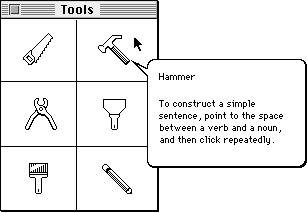
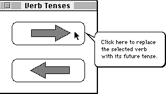

Associating Help Resources With Static Windows
To associate'hrct'and'hdlg'resources with static windows, create an'hwin'resource. As shown here, an'hwin'resource consists of two types of components: a header component and a window component. Use a window component to associate an'hrct'or'hdlg'resource with a particular window.Specifying Header Information for the 'hwin' Resource
Specify theHelpMgrVersionconstant for the first element of the header component. For the second element, specify a constant (normally,hmDefaultOptions) or the sum of several constants' values from this list.CONST hmDefaultOptions = 0 {use defaults} hmUseSubID = 1; {use subrange resource IDs } { for owned resources} hmMatchInTitle = 16; {match window by string } { anywhere in title string}Notice that options regarding local coordinates and bits behind the balloon are not applicable to the'hwin'resource, but, compared to the other resources related to the Help Manager, the'hwin'resource has a unique option:hmMatchInTitle.If you're providing help balloons for a desk accessory or a driver that owns other resources, use the
hmUseSubIDconstant in the second element. (See the chapter "Resource Manager" in this book for a discussion of owned resources and their resource IDs.)You can specify the
hmMatchInTitleconstant to match windows containing a specified number of sequential characters starting with any character position in the window title. If you do not specify thehmMatchInTitleconstant for the second element of the header component, the Help Manager matches characters starting with the first character of the window title.For example, if an
'hwin'resource specifies thehmMatchInTitleconstant in the header component, specifies in the window component that four characters should be matched, and specifies the character stringTestas the window's title string, the Help Manager uses this'hwin'resource when the cursor is located in any active window that is titled Test, Window Test, or Test Case or is given a title with any other string that contains the charactersTest.If you supply the
hmDefaultOptionsconstant, the Help Manager treats the resource IDs in this resource as regular resource IDs and not as subrange IDs, and it begins matching characters at the first character of the window strings specified in each window component. As long as the window components all use the same options, you can list help for all your windows in a single'hwin'resource. You must create separate'hwin'resources for window components that require different options.Specifying 'hdlg' or 'hrct' Resources in the 'hwin' Resource
You can specify multiple window components after the header component.Within the
'hwin'resource you identify'hrct'resources and'hdlg'resources by their resource IDs and by their types. Use the first element of a window component to specify the resource ID of either an'hrct'or an'hdlg'resource. Use the second element to specify that resource's type--either'hrct'or'hdlg'. Use the next
two elements to specify the window with which you want to associate the'hrct'or'hdlg'resource identified in the first two elements.You specify windows in one of these two ways:
When an active window has a title or
- by specifying the number of characters used for matching a window title in the third element of the window component, and by specifying a string consisting of this number of sequential characters from the window's title in the fourth element
- by flagging the third element of the component with a minus sign (-), specifying the
windowKindvalue from the window's window record in the third element, and leaving an empty string in the fourth elementwindowKindvalue that matches an'hwin'resource, the Help Manager provides help balloons for the hot rectangles associated with the specified'hrct'and'hdlg'resources.Figure 3-19 shows a sample palette an application might use and the help balloon displayed for the hammer tool.
Figure 3-19 A tool palette with a help balloon

Note that the help message in Figure 3-19 names the tool. It's a good idea to name tools, because the name of a tool often helps the user determine the purpose of the tool. After naming the tool, describe one or two likely ways to use it. Don't describe every shortcut or trick you can do with the modifier keys.For dialog boxes and alert boxes, you can use
'hrct'resources to define hot rectangles in addition to or instead of those associated with the items. For example, you might want to use an'hwin'and an'hrct'resource in a dialog box to associate a single help balloon with a group of related items rather than provide separate help balloons for all the individual items. (To provide help balloons for individual items by using'hdlg'resources alone, see "Providing Help Balloons for Items in Dialog Boxes and Alert Boxes" beginning on page 3-47.)When providing one help balloon for a group of options in a dialog box, describe first how to implement the options, and then describe how to tell whether an option is selected. If, for example, radio buttons titled Left, Right, and Middle appear in a dialog box grouped under the heading Alignment, a single help balloon explaining this group might state, "To line up the selected text along the left margin, right margin, or middle of the page, click one of these buttons. A dot indicates the selected option." A help balloon for several checkboxes grouped under the heading Style might state, "To apply design elements to the selected text, click the styles you want. To remove design elements, click the styles you want to remove. An X means a style has been applied."
Listing 3-9 shows the
'hwin'resource and the'hrct'resource for the palette in
Figure 3-19.Listing 3-9 Rez input for corresponding
'hwin'and'hrct'resourcesresource 'hwin' (128, "Window help resource", purgeable) { HelpMgrVersion, hmDefaultOptions,/*header component*/ { /*window component*/ 128, /*resource ID of type specified on next line*/ 'hrct', /*resource type for defining help*/ 5, /*length to use when comparing strings*/ "Tools" /*window's title string*/ } }; resource 'hrct' (128, "Tools palette help") { /*header component*/ HelpMgrVersion, hmDefaultOptions, 0, /*balloon definition function*/ 0, /*variation code*/ { /*hot-rectangle component for saw tool goes here*/ /*hot-rectangle component for hammer tool*/ HMStringResItem { {50, 127}, /*tip's coordinates*/ {22,99,54,131}, /*hot rectangle*/ 147,2 /*'STR#' resource ID and index*/ } /*hot-rectangle components for other tools go here*/ } }; resource 'STR#' (147, "Tools palette help text") { { /*[1] saw tool*/ /*help text for saw tool goes here*/ /*[2] hammer tool*/ "Hammer\n\nTo construct a simple sentence, point to the " "space between a verb and a noun, and then click " "repeatedly."; /*help for other tools goes here*/ } };You can also use the'hwin'resource to associate help for items in an alert box or a dialog box. Figure 3-20 shows the Help Manager displaying a help balloon for an item in the dialog box titled Verb Tenses.Figure 3-20 A help balloon for a dialog box with a title

Listing 3-10 shows how the'hwin'resource associates an'hdlg'resource with the dialog box illustrated in Figure 3-20. This'hwin'resource associates help with three different windows: the first is the window titled Tools, the second is an untitled window with awindowKindvalue of 10, and the third is the dialog box titled Verb Tenses.Listing 3-10 Rez input for specifying help for titled and untitled windows
resource 'hwin' (128, "Window help resource", purgeable) { /*header component*/ HelpMgrVersion, hmDefaultOptions, { /*first window component*/ 128, /*help resource ID for Tools window*/ 'hrct', /*resource type for defining help*/ 5, /*length to use when comparing strings*/ "Tools", /*window's title string*/ /*second window component*/ 129, /*help resource ID for untitled window*/ 'hdlg', /*resource type for defining help*/ -10, /*match on windowKind values of 10*/ "", /*matching on windowKind, so empty */ /* string goes here*/ /*third window component*/ 130, /*help res ID for Verb Tenses window*/ 'hdlg', /*resource type for defining help*/ 11, /*length to use when comparing strings*/ "Verb Tenses", /*dialog box's title string*/ } }; resource 'hdlg' (130, "Help for Verb Tense control", purgeable) { /*header component*/ HelpMgrVersion, /*version of Help Manager*/ 0, /*start with first item in item list*/ hmDefaultOptions, /*options*/ 0, /*balloon definition ID*/ 0, /*variation code*/ /*missing-items component*/ HMSkipItem {/*no missing-item help message*/ }, { /*first dialog-item component*/ HMStringResItem { {20, 130}, /*tip--local to item's display rectangle*/ {0,0,0,0}, /*default alternate rectangle: use */ /* item's display rectangle*/ 131, 1, /*highlighted control for future tense*/ 131, 2, /*dimmed control for future tense*/ 0, 0, /*no checked state for control*/ 0, 0 /*no other states for control*/ }, /*second dialog-item component*/ HMStringResItem { {20, 130}, /*tip--local to item's display rectangle*/ {0,0,0,0}, /*default alternate rectangle: use */ /* item's display rectangle*/ 131, 3, /*highlighted control for past tense*/ 131, 4, /*dimmed control for past tense*/ 0, 0, /*no enabled-and-checked control*/ 0, 0 /*no other marks for control*/ } } }; resource 'STR#' (131, "Verb tense help strings") { { /*[1] highlighted control for future tense: help text*/ "Click here to replace the selected verb with its " "future tense."; /*[2] dimmed control for future tense: help text*/ "Click here to replace a verb with its future tense. " "Not available now because you have not selected a verb."; /*[3] /*highlighted control for past tense: help text*/ "Click here to replace the selected verb with its past tense."; /*[4] dimmed control for past tense: help text*/ "Click here to replace a verb with its past tense. " "Not available now because you have not selected a verb."; } };